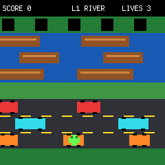
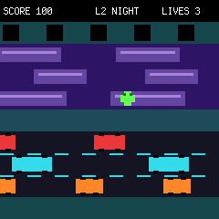
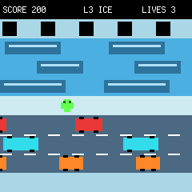
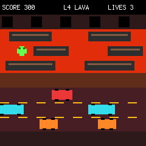

Game 07 · Four-level crossing
Frogger
Thread through three traffic lanes, ride moving platforms across three water lanes and reach the far bank.
← Back to games
Controls
| Input | Action |
|---|---|
| D-pad | Hop one cell |
| + | Advance or retry |
| − | Return to menu |
Scoring
- Each forward hop scores 10.
- Level clears award 100 × level.
- Cars, water and screen edges cost a life.
- Retrying preserves level and score.
The route
- River establishes the crossing.
- Night accelerates the traffic.
- Ice sharpens the pace again.
- Lava is the final, fastest run.
Four crossings
Same river. New rhythm.
Each theme changes the palette and raises the movement speed.


